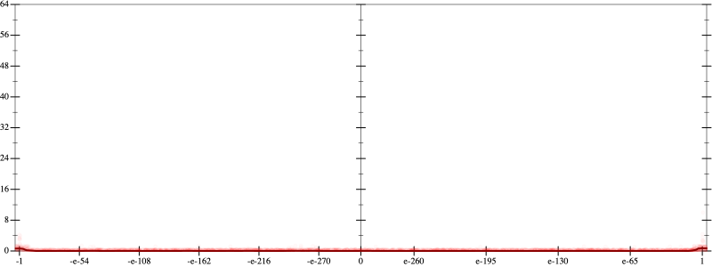
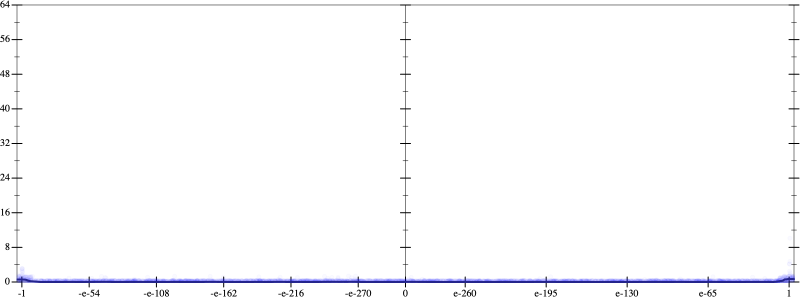
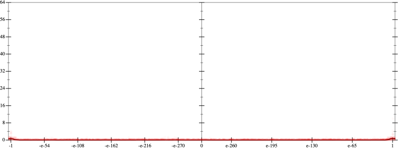
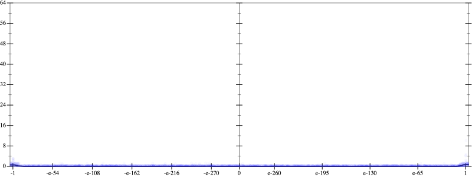

Initial program 0.0
\[\left(\left(-1680.0 \cdot x + 3360.0 \cdot \left(\left(x \cdot x\right) \cdot x\right)\right) + -1344.0 \cdot \left(\left(\left(\left(x \cdot x\right) \cdot x\right) \cdot x\right) \cdot x\right)\right) + 128.0 \cdot \left(\left(\left(\left(\left(\left(x \cdot x\right) \cdot x\right) \cdot x\right) \cdot x\right) \cdot x\right) \cdot x\right)\]
Applied simplify0.0
\[\leadsto \color{blue}{\left(\left(x \cdot x\right) \cdot \left(x \cdot x\right)\right) \cdot \left(\left(x \cdot x\right) \cdot \left(128.0 \cdot x\right) + x \cdot -1344.0\right) + \left(-1680.0 \cdot x + \left(x \cdot x\right) \cdot \left(3360.0 \cdot x\right)\right)}\]
- Using strategy
rm Applied pow20.0
\[\leadsto \left(\left(x \cdot x\right) \cdot \color{blue}{{x}^{2}}\right) \cdot \left(\left(x \cdot x\right) \cdot \left(128.0 \cdot x\right) + x \cdot -1344.0\right) + \left(-1680.0 \cdot x + \left(x \cdot x\right) \cdot \left(3360.0 \cdot x\right)\right)\]
Applied pow20.0
\[\leadsto \left(\color{blue}{{x}^{2}} \cdot {x}^{2}\right) \cdot \left(\left(x \cdot x\right) \cdot \left(128.0 \cdot x\right) + x \cdot -1344.0\right) + \left(-1680.0 \cdot x + \left(x \cdot x\right) \cdot \left(3360.0 \cdot x\right)\right)\]
Applied pow-prod-up0.0
\[\leadsto \color{blue}{{x}^{\left(2 + 2\right)}} \cdot \left(\left(x \cdot x\right) \cdot \left(128.0 \cdot x\right) + x \cdot -1344.0\right) + \left(-1680.0 \cdot x + \left(x \cdot x\right) \cdot \left(3360.0 \cdot x\right)\right)\]
 
